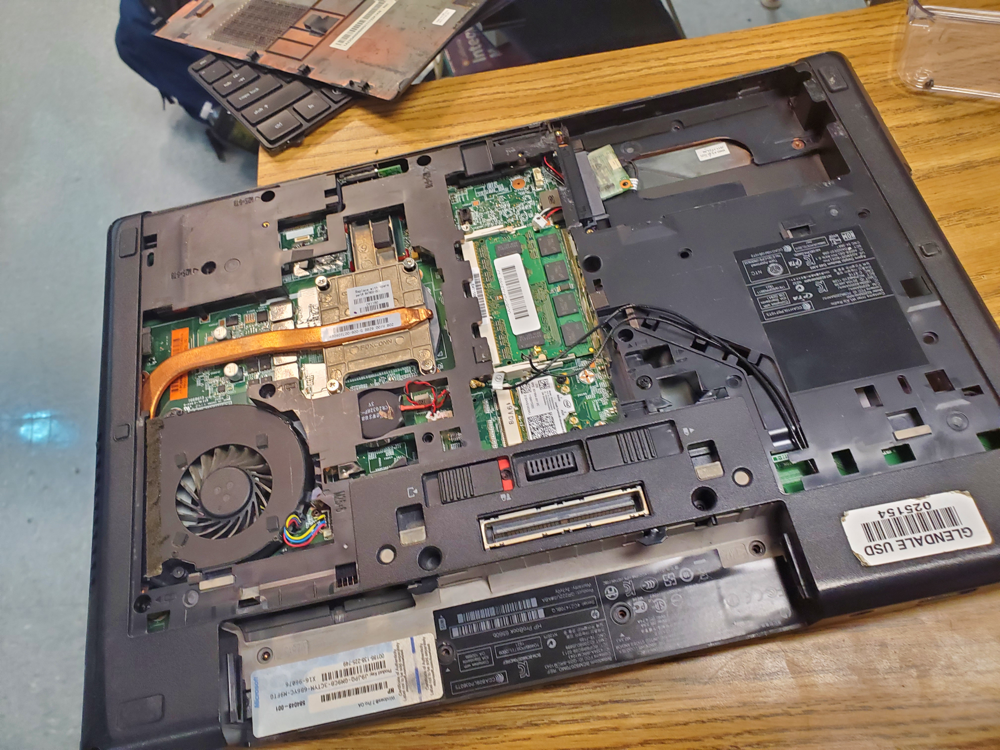
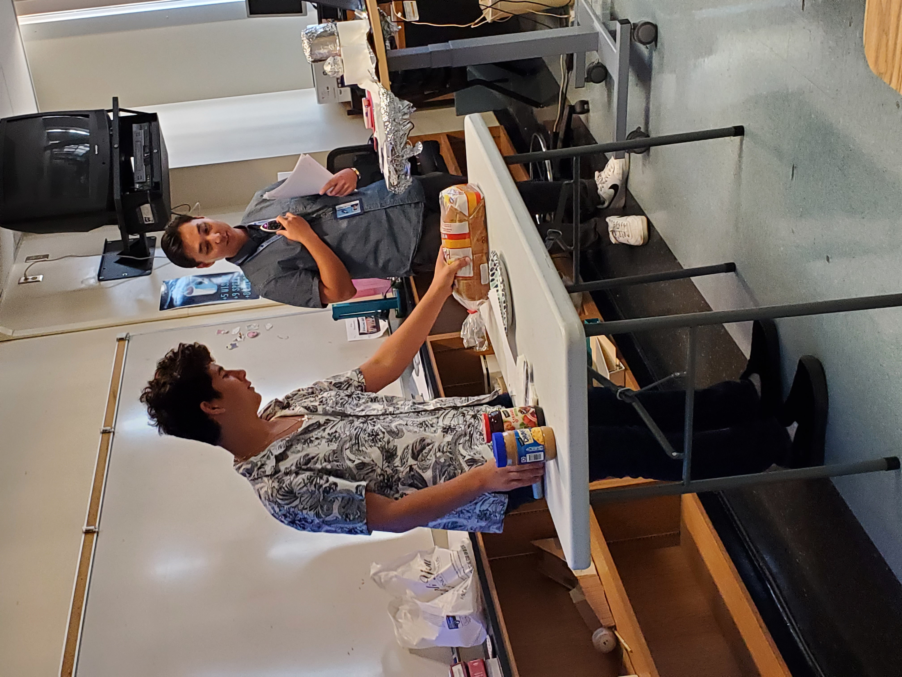
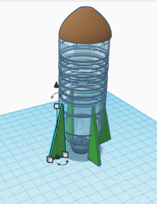

this is a paragraph
CLICK THIS LINK TO FIND THE TRUTH OF THE UNIVERSE!!!9/2/2022 - This week we learned about tinker cad and as our first assignment, we were told to make a kitchen appliance. I chose to make a blender. I think i did pretty well and i am excited for making the goldburg machine next week.
9/9/22 - This week we designed our rube goldburg machines. Alec, Armand, and Sebastian all desined their versions of their machines on tinker cad. i made mine with a ramp, a door, a pulley, and a seesaw type thing. It was very hard to put the different shapes perfectly. Although it was hard I managed to do it and I was able to finish the ramp and the door part.
9/5/22-9/16/22 - Last week we were told to design our rube goldburg machine so me and my table partners designed the machine on tinker cad. We eventually decided on my design and this week we started to build it out of cardboard. We are about 25% done and I am proud of the progress we have done. OH and for challenge day this week we made paper boats that are supposed to hold weights and we won with 90 grams on our boat yay...
9/19/22-9/23/22 - This week we did map testing. Also this week we finished our rube goldburg machine. It doesn't look the same as our tinker cad but it still has the same componenets just made differently. It worked on the 5th try. It didn't work 4 times because the needle wasn't reinforced enough and also there was too much friction on the top of the pulley.


9/26/22 - 9/30/22 - This week we dissected a laptop. It was very dusty and musty and crusty. The screws were hard to unscrew and my group helped me a lot. My hands were very dirty after and we also did a coloring worksheet. It was very hard to put it back together because I forgot what type of screws went in each hole.

9/3/22 - 9/7/22 - This week we had a zoom call with someone from Western Digital and he showed us a presentation about different types of engineering, careers, what he does, parts of an ssd, and his education. We also made a prosthetic in tinker cad but before we drew it on paper. I made a tiger/cat/dog prosthetic. Then on friday we made instructions to make a peanut butter and jelly sandwich. The sandwich lesson was about how computer engineering involves a lot of specific and accurate directions for coding.

9/10/22 - 9/13/22 - This week we learned about aero engineering. We were told that our new project will be to make a rocket with a bottle and other materials. We first drew our bottle rocket and then on wednesday we tinker caded it. For our challenge today we were told to make something that flies out of paper whether it was a plane or a ball that would hit a trashcan at the bottom of a two floor building. I think 2 people hit the trashcan in our class. Mine glided very very well but it went to the right and missed :( .

9/17/22 - 9/21/22 - This week we were told to plan, cad, and create bottle rockets. Our group planned the bottle rocket by drawing what it would look like and what materials they are made of. I was the one in my group who tinker caded the bottle rocket. We then created our bottle rockets with cardboard, a lot of tape, and two bottles. I cut off the top of the first bottle and put it on the bottom of the second bottle for the tip. We used cardboard for the fins and attached them with tape. We launched our rockets but it didn't work because the bottom wasn't straight.